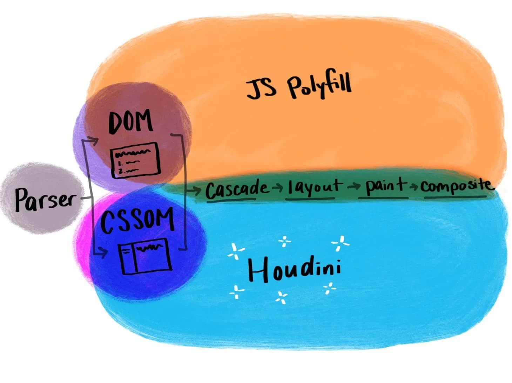
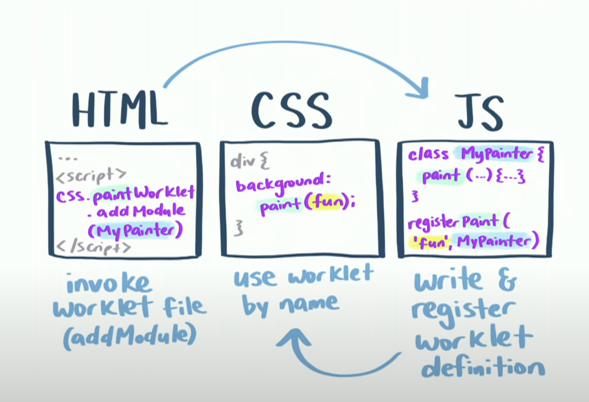

class: center, middle, bg-color, highlight <div class='manabie-logo'> <svg preserveAspectRatio="xMidYMid meet" data-bbox="0 0 100 20.05" xmlns="http://www.w3.org/2000/svg" viewBox="0 0 100 20.05" height="21" width="100" data-type="color" role="presentation" aria-hidden="true"> <g> <path fill="#3ACE85" d="M82.86 4.2c1.165 0 2.11-.94 2.11-2.1 0-1.16-.945-2.1-2.11-2.1s-2.11.94-2.11 2.1c0 1.16.945 2.1 2.11 2.1z" data-color="1"></path> <path fill="#395AD2" d="M12.1 6.77c-1.74 0-3.14.79-3.73 2.06-.59-1.28-1.99-2.06-3.73-2.06C1.91 6.77 0 8.86 0 11.85v7.86h2.9v-7.84c0-1.3.79-2.21 1.92-2.21 1.38 0 2.1.89 2.1 2.56v7.48h2.9v-7.48c0-1.68.73-2.56 2.1-2.56 1.13 0 1.92.91 1.92 2.21v7.84h2.9v-7.86c0-2.99-1.91-5.08-4.64-5.08z" data-color="2"></path> <path fill="#395AD2" d="M29.44 8.43c-.82-1.04-2.24-1.66-3.87-1.66-3.98 0-6.66 3.43-6.66 6.63 0 3.26 2.44 6.63 6.53 6.63 1.59 0 3.09-.64 3.99-1.68v1.35h2.9V7.1h-2.9v1.33h.01zm.1 4.98c0 2.11-1.72 3.89-3.76 3.89-2.1 0-3.81-1.75-3.81-3.89s1.71-3.89 3.81-3.89c2.04 0 3.76 1.78 3.76 3.89z" data-color="2"></path> <path fill="#395AD2" d="M42.08 6.77c-1.56 0-2.89.62-3.71 1.7V7.11h-2.9v12.6h2.9v-7.04c0-1.82 1.15-3 2.92-3 1.87 0 2.82 1.03 2.82 3.05v6.99h2.9v-7.58c-.01-3-2.17-5.36-4.93-5.36z" data-color="2"></path> <path fill="#395AD2" d="M59.74 8.43c-.82-1.04-2.24-1.66-3.87-1.66-3.98 0-6.66 3.43-6.66 6.63 0 3.26 2.44 6.63 6.53 6.63 1.59 0 3.09-.64 3.99-1.68v1.35h2.9V7.1h-2.9v1.33h.01zm.11 4.98c0 2.11-1.72 3.89-3.76 3.89-2.1 0-3.81-1.75-3.81-3.89s1.71-3.89 3.81-3.89c2.03 0 3.76 1.78 3.76 3.89z" data-color="2"></path> <path fill="#395AD2" d="M72.64 6.77c-1.58 0-3.19.68-3.97 1.66v-5h-2.9v16.28h2.9v-1.32c.77.97 2.38 1.66 3.97 1.66 3.18 0 6.56-2.33 6.56-6.63s-3.38-6.65-6.56-6.65zm3.51 6.64c0 2.25-1.57 3.89-3.74 3.89s-3.74-1.64-3.74-3.89 1.57-3.89 3.74-3.89c2.16 0 3.74 1.63 3.74 3.89z" data-color="2"></path> <path fill="#395AD2" d="M84.31 8.16h-2.9v11.49h2.9V8.16z" data-color="2"></path> <path fill="#395AD2" d="M93.47 6.77c-4.51 0-6.94 3.42-6.94 6.63s2.43 6.63 6.94 6.63c2.22-.03 4.29-1.11 5.84-3.06l.09-.11-2.47-1.36-.06.08c-.92 1.22-2.12 1.87-3.48 1.87-1.86 0-3.44-1.31-3.65-3.01H100v-.6c0-4.87-3.82-7.07-6.53-7.07zm-.36 2.59c1.64 0 2.94.99 3.49 2.65h-6.84c.45-1.64 1.72-2.65 3.35-2.65z" data-color="2"></path> <path fill="#395AD2" d="M12.1 6.77c-1.74 0-3.14.79-3.73 2.06-.59-1.28-1.99-2.06-3.73-2.06C1.91 6.77 0 8.86 0 11.85v7.86h2.9v-7.84c0-1.3.79-2.21 1.92-2.21 1.38 0 2.1.89 2.1 2.56v7.48h2.9v-7.48c0-1.68.73-2.56 2.1-2.56 1.13 0 1.92.91 1.92 2.21v7.84h2.9v-7.86c0-2.99-1.91-5.08-4.64-5.08z" data-color="2"></path> </g> </svg> </div> # CSS Houdini A collection of browser API for CSS <div class="author">[I'm <span class="author-name">THU</span>]</div> --- # Agenda 1. What Is Houdini? 2. CSS Properties and Values API 3. CSS Typed Object Model API 4. Worklet --- # What Is Houdini? A collection of browser API for CSS - Provides developers access to the CSS Object Model - Easy to custom CSS features - More performance  --- class: center, middle, bg-color, highlight # CSS Properties and Values API ## How to create a custom CSS variable? --- ## How to create a custom CSS variable? To create a variable with global scope, declare it inside the :root selector. CSS (old syntax). ```css :root { --bg-color: #fff; --text-color: #000; } .bg-color { background-color: var(--bg-color); color: var(--text-color); } ``` --- class: bg-color # CSS Properties and Values API Custom property with name, syntax, inherits, initialValue ```js CSS.registerProperty({ name: '--bg-color', syntax: '<color>', inherits: true, initialValue: '#fff', }); ``` <br/> <br/> And we can use it in CSS like this ```css /* using property and values API */ .bg-color { background-color: var(--bg-color); } .bg-color.highlight { --bg-color: #272822; } ``` --- class: bg-color # CSS Properties and Values API ```js window.CSS.registerProperty({ name: '--my-color', syntax: '<color>', inherits: true, initialValue: '#fff', }); ``` <br/> <br/> What will happen if we write like this? ```css /* using property and values API */ .bg-color.highlight { --bg-color: 'i am looking for a bug'; } ``` --- # CSS Properties and Values API And for now, you can write it directly in the CSS. ```css @property --bg-color { syntax: "<color>"; inherits: true; initial-value: #fff; } ``` --- class: center, middle, bg-color, highlight ## CSS Typed Object Model API --- ## CSS Typed Object Model API CSS values as typed JavaScript objects rather than strings ```css selector: { [key: string]: string; } ``` Typed OM ```css selector: { [key: string]: CSSStyleValue } ``` --- ## CSS Typed Object Model API Let take a example: <div id="parent-2-1" style="height: 120px"> <div id="question-2-1" style="height: 50px">Height 50px</div> </div> <br /> *Question:* **How we can adjust children height = 3/4 parent height?** Old syntax: ```js const element = document.getElementById('selector'); const newHeight = Number(String(parent.style.height).replace('px','')) * 3 / 4; element.style.height = newHeight + 'px' ``` Parsing and overriding styles manually can be difficult and easy to make mistakes. Because the value type needs to be changed back and forth. --- ## CSS Typed Object Model API Let take a example: <div id="parent-2" style="height: 120px"> <div id="question-2" style="height: 50px">Height 50px</div> </div> <br /> *Question:* **How we can adjust children height = 3/4 parent height?** Using typed OM ```js const element = document.getElementById('question-2'); const parent = document.getElementById('parent-2') const newHeight = parent.attributeStyleMap.get('height').value * 3 / 4; element.attributeStyleMap.set('height', window.CSS.px(newHeight)); --- window.CSS.px(10) CSSUnitValue{value: 10, unit: 'px'} ``` --- class: center, middle, bg-color, highlight # Worklets CSS Painting API --- # Worklet - Worklet allow you to write modular CSS to accomplish specific tasks - Worklets can be run only on HTTPS (on production environment) or on localhost (for development purposes). - Like Web Worker, Worklet live in a single thread from your main thread for CSS style --- # CSS Painting API  <br /> 1. Write and register worklet module using `registerPaint` function 2. Invoke worklet module using `CSS.paintWorklet.addModule` function 3. Using worklet by `paint()` function --- # CSS Painting API 1. Write and register worklet definition in JS file ```js registerPaint('mana-paint', class { paint (ctx, geom, properties, args) { // Use `ctx` as if it was a normal canvas, a subset of the CanvasRenderingContext2D API //draw M ctx.beginPath(); ctx.moveTo(90, 130); ctx.lineTo(95, 25); ctx.lineTo(150, 80); ctx.lineTo(205, 25); ctx.lineTo(210, 130); ... ctx.strokeStyle = 'rgb(57, 90, 210)'; ctx.lineWidth = 15; ctx.stroke(); } }); ``` --- # CSS Painting API 2. Add worklet module ```js if (CSS.paintWorklet) CSS.paintWorklet.addModule('/path.js'); ``` --- # CSS Painting API 3. Using worklet in CSS file <div class="demo-worklet"> <p class="paint"><p> </div> ```css .demo-worklet { padding-bottom: 25px; font-size: 3em; color: #fff; margin: 2em 0; } .demo-worklet .paint { height: 200px; background: paint(mana-paint); } ``` --- # The ambition of CSS Houdini New standards to design own graphic effects, our own layouts, and maybe our own extensions (new selectors, new properties, new functions, etc.), ans so on. **In one word, extend CSS as we want.** <br/> <br/> If you want more information about them and their current status, take a look at [Is Houdini Ready Yet](https://ishoudinireadyyet.com/)? Also check this site to see what is the world going on with CSS Houdini. https://houdini.how/ # Reference 1. [Paint Worklet](https://drafts.css-houdini.org/css-paint-api/#paint-worklet) 2. [CSS Houdini](https://developer.mozilla.org/en-US/docs/Web/CSS/CSS_Houdini) 3. [Worklet](https://html.spec.whatwg.org/multipage/worklets.html#worklet)